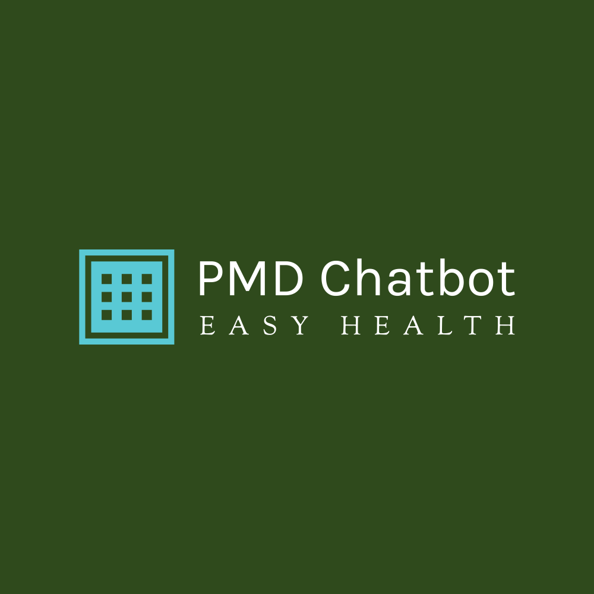
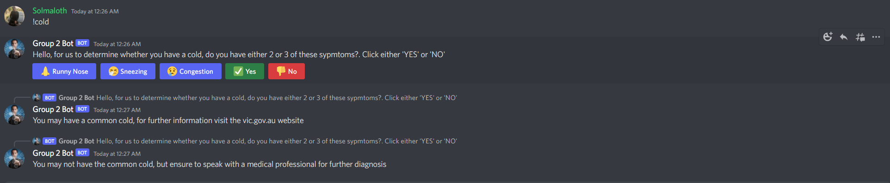

Project Idea - PMD Medical Chatbot
Overview
Our project idea was to create a python chatbot that can diagnose a person at home if they select a combination of certain symptoms and the duration of their symptoms in order to minimise general practitioner (GP) appointments if the disease that the person is experiencing is not severe enough for them to go to their GP - but if the symptom, or the combination of symptoms selected by the patient potentially indicates that they could have a slightly, or far more serious disease (eg. the disease may require medication, which the sick person would need to go to a GP for), the chatbot would inform them that they should consider booking an appointment with their GP.
Motivation
The medical chatbot would save money and time for the sick person, and alert them if their symptom is potentially severe enough for them to require booking an appointment with their GP. Also, it would also save time for the general practitioner, as they would likely not be wasting time with a patient who just has a sore throat. In addition, if the symptom (or combination of symptoms) that have been selected, and the duration of symptoms has continued even after taking home remedies (eg. sleeping early, hydrating regularly or gargling hot salt water when having a sore throat, and still having a sore throat for a long time despite doing all of these things) - then the chatbot will send a message recommending the user to go to their GP for further diagnosis (and also to get a prescription for medication if required).
If we compare the initial bot we were going to go with called Watson Discovery and Watson Assistant, our bot is a much more simplified version. Our discord bot, unlike watsons technology, can be used throughout thousands of discord channels and is easily usable for the user. However, because IBM uses machine learning and has AI, the decision making capabilities of our discord bot is much less and can’t give an exact response. The easy accessibility and actually putting the bot onto the discord channels to be used by people is much more simple for the discord owners rather than having to implement it using IBM watson. Currently, there are no advanced tutorials on using the IBM watson and IBM discovery as a discord bot that we can use.
Apart from obvious cases where the patient fails to include a particular symptom that would make a medical bot diagnose the wrong disease, a medical chatbot also has other drawbacks.
Since the medical bot will be utilizing the user input based on their symptoms, it is impossible to verify specific diseases that would require a medical professional to diagnose the exact illness for example. When the patient has Breathing Difficulties, the bot will not be able to identify whether it is a common cold or another serious disease like asthma or COVID. Furthermore, the bot will still not be able to identify an illness even when the symptoms are an exact match. As many of the symptoms, such as nausea and blood pressure, can also be affected by mental health.
Currently, Google and other Health related websites such as WebMD allows users to search related medical diseases on the World Wide Web. Although they provide far more details than the medical chatbot, the users cannot search up diseases using multiple symptoms. Additionally, the discord applciation is avaliable for free and the majority of its users includes teens, gamers and other young adults all over the world. The bot will be even more useful for the third world countries that does not have access to doctors due to various reasons as it could easily be called up by a teen user.
Description
Project Title:
PMD, the acronym for pre medical diagnosis, is a discord chatbot that delivers just that; a premedical diagnosis. As this piece of technology cannot entirely replace doctors and GPs, and with the current state of our IT artefact, cannot legally offer medical advice or any form of concrete diagnoses.
Overview:
The healthcare industry collects millions of data, therefore applying AI and bots can enhance efficiency and productivity. Providing predictions and prevention of certain diseases as well as diagnoses. Despite being hard coded as opposed to applying machine learning algorithms, our decided outcome comes in the form of a discord chatbot, where through a series of commands, a bot can effectively allow users to further elaborate with their symptoms in order to come to a feasible diagnosis. As shown below when the user suspects they have a cold, the command ‘!cold’ is entered and the bot responds with a questionnaire to help the user offer insight for the bot to filter through potential diagnoses.
Project Justification:
Target audience regarding this project include but are not limited to isolated and homebound individuals, by choice or circumstance such as agoraphobia, disability, illness, injury, isolation, etc. The intended audience must also have a feasible connection to the internet, and are of ages 18 and over, as individuals who can legally make their own decisions regarding their health. In an increasingly internet and tech savvy world, the covid-19 pandemic also plays a role in the importance of this technology, with heightened importance of isolation and remote work, the opportunity for remote consultation and the absence of physical doctor visitation is also normalised.
Objectives:
When developing our bot, set objectives we’ve consistently considered include:
> get the bot to interact with user response
> have the bots permissions and authorisations set
> admin permissions/rights
> generate potential disease pool of responses
> identify symptoms for diseases to add to the bot
> have bot understand/identify discord input command identifiers ‘!’
> have working symptom buttons
> give user response when pressed
Phases of Work:
Five phases can be identified in order to create PMD. The team members will first start the project, define it, and then plan it. The team then puts the project into action and keeps an eye on how it's going. The project must be closed out once it is finished. (Project Management Institute, 2018)
The first phase: project initiation will provide a general definition of the project. A document called a " Project charter " will be needed to outline the goals and specifications of the project. For example, it will include every member's responsibilities, deadlines, milestones, etc. This document is essential as the team members will need all the information to push and coordinate the work. This phase is the starting point of the project therefore it is important to finish any research and tests that will determine the feasibility of PMD. (Project Management Institute, 2018)
The second phase: the planning phase is critical to managing the project. This phase will concentrate on creating a roadmap the team members can follow. The team members will be grouped and assigned goals and resources. A strategy will be created to achieve the goals identified in phase 1. It will include performance measures, schedule, costs and measures to keep track of project proceedings. When this phase ends every member will be aware of their respective responsibilities. There are several plans that can be created to accomplish this phase. To name a few, risk management plan, schedule, Gantt chart, etc.(Project Management Institute, 2018)
The third phase: the project execution stage will create deliverables that need to be finished by the team. This section will start the most important meeting, performance reports and any updates to the project process. Task to be completed during the third phase of PMD: develop and run PMD, status reports and update any changes to the design and schedule of the project. (Project Management Institute, 2018) The team will use teams to document their meetings and manage any short-term changes through MS teams.
The fourth phase: the project monitoring and performance stage will guarantee that the objectives from the strategy created in phase two will be met. Key performance indicators (KPIs) will be used by the team members to monitor and evaluate the project's progress. Some KPI that can be used for PMD are goals and performance indicators. (Project Management Institute, 2018) The fifth phase: A project must be properly closed just as it was started. A meeting can be conducted after the creation of PMD to assess the gains or any losses that were derived from the outcome. This will allow our team to improve on any weakness and plan for another project. This phase will involve the team giving feedback on the project as well as on each other. This is crucial as the viability of a team will determine the quality and success of the project. (Project Management Institute, 2018)
The fifth phase: A project must be properly closed just as it was started. A meeting can be conducted after the creation of PMD to assess the gains or any losses that were derived from the outcome. This will allow our team to improve on any weakness and plan for another project. This phase will involve the team giving feedback on the project as well as on each other. This is crucial as the viability of a team will determine the quality and success of the project. (Project Management Institute, 2018)
Metrics for Evaluating and Monitoring:
Metrics will largely depend on a project's goals and difficulty. For PMD we have narrowed the most important metrics to use to evaluate and monitor it:
- Productivity – This indicator will evaluate the use of resources and determine the influence the team has on the project. It will compare the effort made by the members with the previously planned level of effort needed to complete the project. However, the team needs to keep in mind that this measure can be affected by timeline delays, unavoidable situations and underperformance. (Villanova University, 2022)
- Scope of work – This will normally be determined right away but while implementing plans there will be changes and additions which will undermine members' efforts by reducing performance. Therefore, it's important to not let change get in the way of the schedule and manage it in a way to keep the planned pace going. (Villanova University, 2022)
- Quality – This indicator concentrates on customers and quality assurance. PMD is focused on finding the symptoms of a user, therefore it needs to be able to analyse every possible symptom to give the most accurate diagnosis. In order to find faults in PMD, numerous tests must be conducted. This will also give the confidence needed for the team to move forward with the project. (Villanova University, 2022) (Lin 2022)
- Customer satisfaction - This metric is absolutely crucial as the success and returns of the project will depend on the customers. This will track how satisfied and happy users are with PMD. This indicator will also provide feedback on what areas of PMD affect customers the most and what areas can be improved on. (Villanova University, 2022)
Example image (very basic concept for now):
Tools and Technologies
In order for us to create our medical chatbot and give it functionality properly, we require certain tools and technologies to support it. Beginning with our programming language, we will be entirely using Python to code the bot. The huge support library for discord bots is the main reason we decided to pick Python over other programming languages that allow us to create discord bots like javascript, C#, PHP etc.. Before we can begin any coding, we need to install Python onto our PC, and the version must be above 3.8 to support the discord libraries. The main libraries that we will be installing through the CMD are discord.py; we may also consider nextcord if discord.py shuts down or is no longer up to date. For the code editor, we will be using Visual Studio Code, mostly because of our familiarity with Visual Studio rather than other code editors. For our code editor to look better when typing and allow Python to work, we will be downloading the following extensions: Pylance and Python by Microsoft, Material Icon Theme by Phillip kef, Python indents by Kevin Rose and Python snippets by Ferhat Yalcin. Each of the members must have discord installed and have an account ready. This is done to ensure each member can see how the bot is working and have the opportunity to test it out. For our bot to function on our discord, we must use the discord developer portal and set the correct permissions for our medical chatbot.
Skills Required
The skills required for creating the medical chatbot include knowledge of Python, which can be learned either by taking online crash courses, watching Youtube tutorials, researching on the Internet, or taking programming classes (e.g. enrolling in an introduction to programming subject at university). Learning how to code a bot on Python that is somewhat functional can take up to 100 hours of python training and learning object-oriented programming. Each member of the group will need to go through a UDEMY course called “2022 Complete Python Bootcamp From Zero to Hero in Python”, which will give us a solid basis on how to write Python and get started with bot writing. Furthermore, once we have a solid basis in Python, we will need to watch youtube tutorials on discord.py and nextcord. These are the two main libraries that all members need to learn to begin writing the bot and creating a finished product. As the discord bot can be written in several other languages like Javascript and PHP, we decided to go for Python for its simplicity to learn and a much easier skill to require. When writing the code for the medical chatbot, the Visual Studio code editor will be used and must be understood by each member.
Outcome
The outcome of creating this medical chatbot would be that less money is wasted on gp appointments, therefore allowing the gp focus on the patients with the more severe diseases. However, this current version of the medical python chatbot is only limited to diagnosing a very limited range of physical diseases, and it also cannot diagnose any mental problems or mental illnesses. Since physical diseases could be directly influenced by mental health issues, this limits the ability of our doctor chatbot to give a sick patient a full diagnosis.